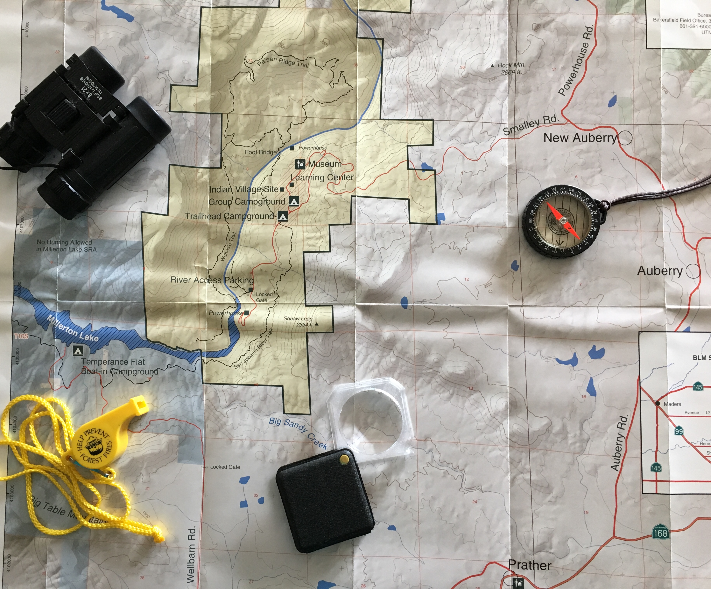

Contact
In the News
Education Materials
About
Home

Friends of the San Joaquin River Gorge
the SJRG is in the heart of wildland-urban interface
footbridge across the gorge
enjoy the spring blooms
hike with your family